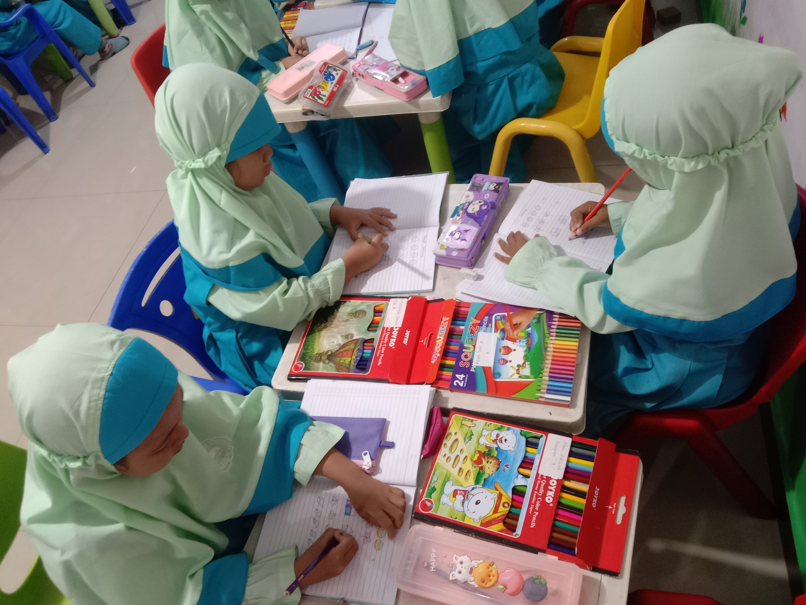
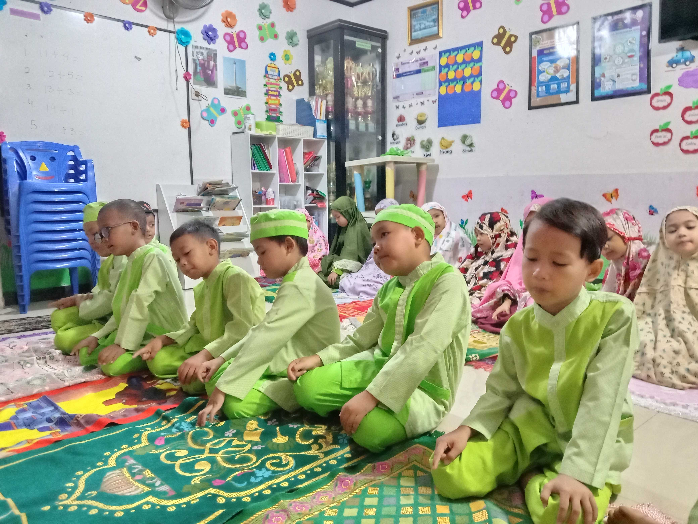
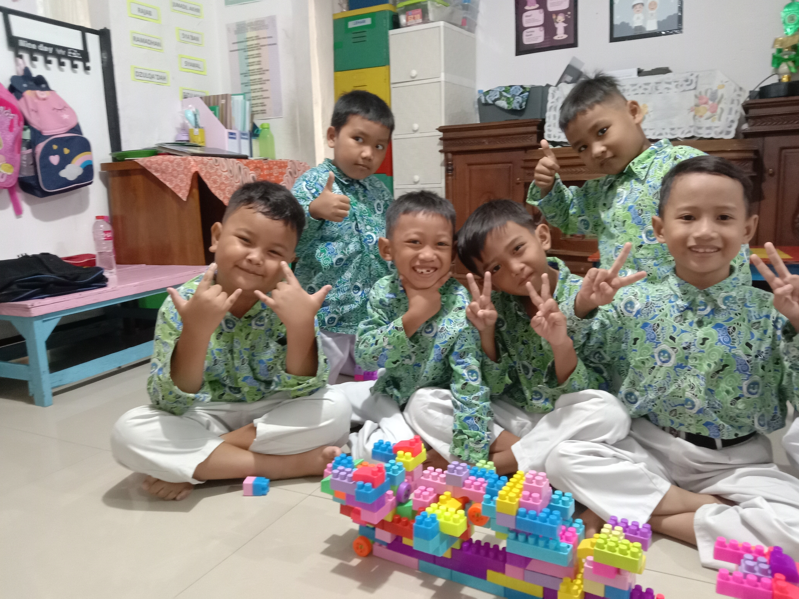
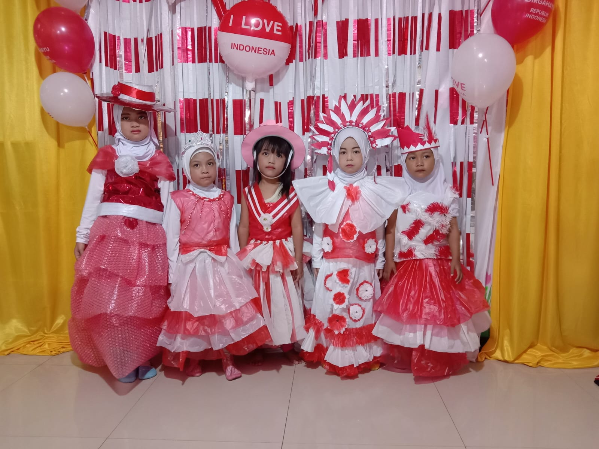

Kegiatan Harian
Kegiatan Belajar Mengajar
Pembelajaran interaktif di dalam kelas yang memicu kreativitas dan keingintahuan anak. Setiap hari anak-anak diajak belajar sambil bermain dengan pendampingan penuh dari guru.
Kegiatan
Momen belajar dan bermain anak-anak RA Al Madani dalam lingkungan yang hangat dan menyenangkan.

Kegiatan Harian
Pembelajaran interaktif di dalam kelas yang memicu kreativitas dan keingintahuan anak. Setiap hari anak-anak diajak belajar sambil bermain dengan pendampingan penuh dari guru.

Pembiasaan melaksanakan ibadah bersama untuk menanamkan nilai keagamaan dan kedisiplinan sejak dini.

Waktu bermain bersama untuk melatih kreativitas, motorik halus, dan kemampuan bersosialisasi.

Kegiatan khusus memperingati hari besar Islam maupun nasional dengan penuh keceriaan.

Pembiasaan membaca Iqro dan hafalan surat pendek setiap pagi sebelum kegiatan utama.